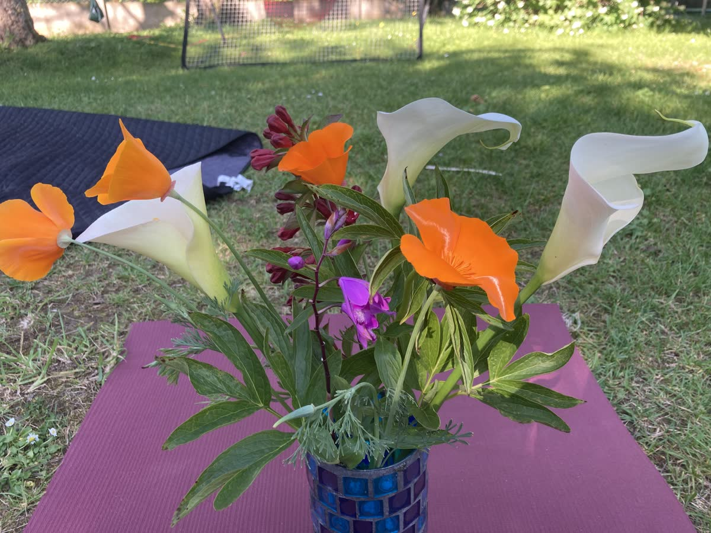

i
Yoga
Grounded, unhurried classes that honour the body as it is today.
Take a little time for yourself.
A space to slow down, breathe and come home to the body. I teach yoga, guide meditation and sound baths, and hold women's circles and retreats where there is room simply to be.
Upcoming gatherings
Grounded, unhurried classes that honour the body as it is today.
Stillness, breath and attention, drawing on contemplative traditions.
Resting in sound and vibration, letting the nervous system soften.
Fire, flowers, cacao, story and silence, shared in a circle of women.
"A few words from a woman who came on retreat will live here."
Name · Retreat, year"Hadi held the space so gently that I could finally rest."
Placeholder"Another reflection, in her own words."
PlaceholderRest makes room for everything else.
Write to me and I'll let you know.